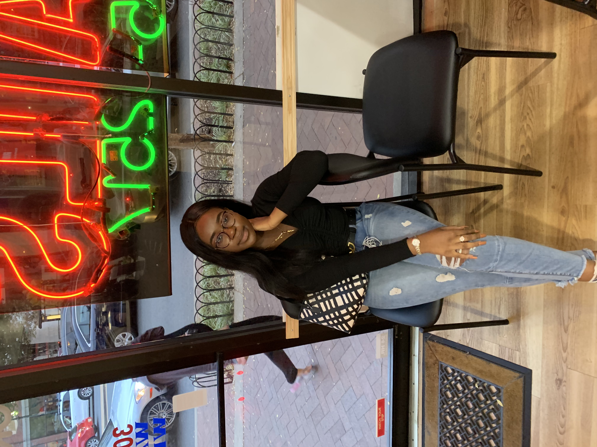

Hello !!! First I would like to thank you for visiting my page. I am Yasmine Toure, I am from Ivory Coast (West Africa), and I am a student at the George Washington University. My major is Business with a concentration in International Business. I started working out as a junior in college and realized that working out was for me an energy and mood booster. It is also a stress relief and it helps me organizing my work and life better. I know that working out is not easy for everybody, especially women since they have a lotof duties (work, education, childcare). Sometimes, some women do not know where and how to start working out so I created this website to help them and encourage them in started their workout journey with structured workout plans, meals, and tips!
As a student, I am interest in working in either Marketing or Finance. If you are a recruiter by any chance or if your company is hiring for a Marketing or Finance position, feel free to downlaod my resume and contact me if you believe that I would be a good fit for the position.